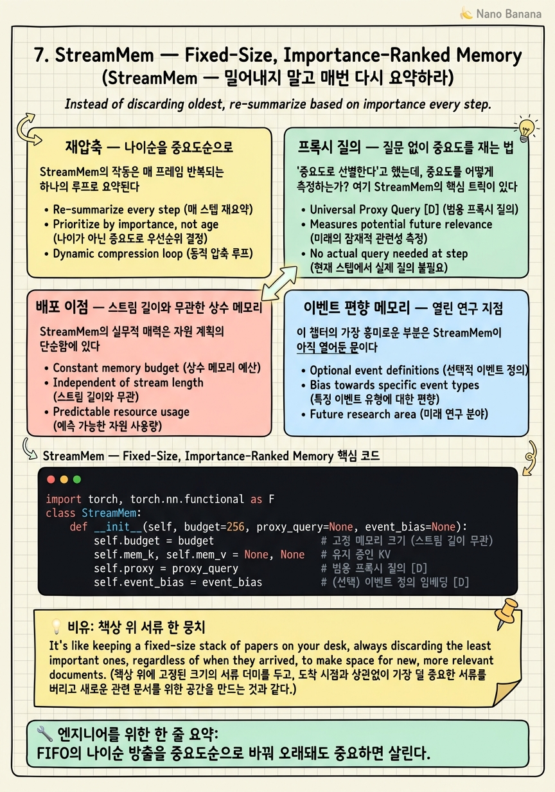

StreamMem — Fixed-Size, Importance-Ranked Memory

🎯 학습 목표
- FIFO 망각과 중요도순 방출의 차이를 명확히 구분한다
- 매 스텝 전체를 재선별하는 방식이 왜 나이순보다 공정한지 안다
- 실제 질문 없이 범용 프록시 질의로 중요도를 재는 원리를 설명한다
- GPU 메모리가 스트림 길이와 완전 무관해지는 배포상 이점을 안다
- 프록시 질의에 이벤트 정의를 심는 편향 아이디어(열린 연구)를 이해한다
6장 LiveVLM의 마지막 한계 — FIFO 망각 — 를 기억하는가? 저장 한계를 넘으면 오래된 것부터 밀어내는데, 이 방출이 나이순이라 중요도와 무관했다. 30분 전의 결정적 단서가 방금 들어온 사소한 프레임에 밀려 사라지는 위험. StreamMem(arXiv 2508.15717)은 정확히 이 지점을 공략한다 — "밀어내지 말고, 매번 다시 요약하라."
핵심 전환은 방출의 우선순위를 나이에서 중요도로 바꾸는 것이다. 오래됐어도 중요하면 살아남고, 방금 들어왔어도 사소하면 밀려난다. 옛것과 새것이 나이가 아니라 중요도로 공정하게 경쟁한다.
이를 위해 StreamMem은 처음부터 끝까지 고정 크기 KV 메모리 하나만 유지하고, 새 프레임이 올 때마다 기존 메모리와 새 KV를 합쳐 전체를 다시 선별·압축한다. 그 결과 GPU 메모리가 스트림 길이와 완전히 무관해져, 24시간 감시의 자원 계획이 상수 계산이 된다 — 배포 관점에서 대단히 매력적인 성질이다. 이 챕터는 그 재압축 메커니즘과, "중요도를 어떻게 재는가"라는 프록시 질의 트릭, 그리고 이벤트 탐지를 위한 편향 아이디어(열린 연구 지점)를 다룬다.
핵심 내용
재압축 — 나이순을 중요도순으로
StreamMem의 작동은 매 프레임 반복되는 하나의 루프로 요약된다.
처음부터 끝까지 고정 크기 KV 메모리 하나만 유지한다. 새 프레임이 도착하면,
1. [기존 메모리 + 새 프레임 KV]를 한 덩어리로 놓는다.
2. 이 합쳐진 덩어리 전체를 중요도 기준으로 재선별·재압축한다.
3. 고정 크기에 맞게 상위 중요도 토큰만 남긴다.
FIFO와의 차이가 여기서 극명하다. FIFO는 "가장 오래된 것"을 무조건 방출하지만, StreamMem은 전체를 다시 평가해 "가장 덜 중요한 것"을 방출한다. 오래됐어도 중요하면 살아남는다.
\[\text{FIFO: keep} = \text{argmax}_{\text{나이}} \quad\neq\quad \text{StreamMem: keep} = \text{argmax}_{\text{중요도}}\]
이 "매번 전체를 다시 요약한다"는 발상이 중요하다. 기존 메모리를 고정된 것으로 취급하지 않고, 새 정보가 들어올 때마다 과거의 중요도까지 재평가한다. 어제는 중요해 보였던 정보가 오늘의 맥락에서 덜 중요해질 수 있고, 그 반대도 가능하다. 메모리가 정적 저장고가 아니라 끊임없이 재정렬되는 우선순위 큐처럼 작동한다.
대가는 명확하다 — 스텝마다 재선별 연산이 추가된다. FIFO는 그냥 앞을 자르면 되지만, StreamMem은 매 스텝 중요도를 다시 계산해야 한다. 이 추가 연산이 "정보를 더 똑똑하게 보존"하는 값이다.
프록시 질의 — 질문 없이 중요도를 재는 법
"중요도로 선별한다"고 했는데, 중요도를 어떻게 측정하는가? 여기 StreamMem의 핵심 트릭이 있다.
가장 자연스러운 방법은 "실제 질문에 대한 attention"을 보는 것이다. 질문이 특정 토큰을 많이 참조하면 그 토큰이 중요하다. 하지만 스트리밍 감시에서는 문제가 있다 — 질문이 아직 오지 않았거나, 미래에 어떤 질문이 올지 모른다. 압축은 지금 해야 하는데 질문은 나중에 온다.
StreamMem의 해법은 범용 프록시 질의(query-agnostic proxy query)다. 실제 질문 대신, "어떤 질문에도 평균적으로 참조될 법한" 일반적인 프록시 질의를 만들어, 그에 대한 attention 신호로 중요도를 측정한다.
즉 "이 토큰이 앞으로 올 법한 온갖 질문들에 대해 평균적으로 얼마나 유용한가"를 프록시로 추정하는 것이다. 특정 질문에 최적화하는 대신, 범용적으로 유용한 토큰을 남긴다. 6장 LiveVLM도 query-agnostic이었지만, LiveVLM은 attention 허브 구조를, StreamMem은 프록시 질의 attention을 기준으로 삼는다는 차이가 있다.
이 프록시 질의 메커니즘이 다음 섹션에서 볼 이벤트 편향의 문이 된다 — 프록시를 범용이 아니라 "이벤트 지향"으로 바꾸면, 메모리가 그 이벤트에 유리하게 편향되기 때문이다.
배포 이점 — 스트림 길이와 무관한 상수 메모리
StreamMem의 실무적 매력은 자원 계획의 단순함에 있다.
Stage ②의 다른 기법들과 비교해보자.
| 기법 | GPU 메모리 | 저장 공간 | 망각 방식 | |---|---|---|---| | StreamingVLM | 고정 | 고정 | 비전 조기 방출 | | ReKV | 고정 | 선형 증가 | 망각 없음 | | LiveVLM | 고정 | 완화된 증가 | FIFO(나이순) | | StreamMem | 완전 고정 | 고정 | 중요도순 |
StreamMem은 GPU 메모리가 스트림 길이와 완전히 무관하다. ReKV처럼 디스크가 선형으로 늘지도 않고, LiveVLM처럼 나이순으로 밀어내지도 않는다. 그저 고정 크기 하나를 유지하며 내용물만 계속 갱신한다.
이것이 배포에서 왜 중요한가? 용량 계획이 상수 계산이 되기 때문이다. "24시간 돌리면 메모리가 얼마나 필요한가?"라는 질문에, StreamMem은 "1시간이든 24시간이든 동일하다"고 답한다. GPU를 몇 장 확보할지, 인스턴스 크기를 얼마로 할지가 스트림 길이에 의존하지 않으니, 프로덕션 SRE 관점에서 예측 가능하고 안전하다.
한계도 정직하게 짚자. 고정 예산이 작으면 초장기 스트림에서 정보 소실 자체는 불가피하다. StreamMem이 하는 것은 "무엇을 잊을지를 잘 고르는 것"이지, "아무것도 안 잊는 것"이 아니다. 완전 보존이 필요하면 ReKV식 오프로드를 병행해야 한다.
이벤트 편향 메모리 — 열린 연구 지점
이 챕터의 가장 흥미로운 부분은 StreamMem이 아직 열어둔 문이다. 이것은 10장 최종 아키텍처에서 "자체 기여 후보"로 다시 등장한다.
앞서 중요도를 범용 프록시 질의로 잰다고 했다. "어떤 질문에도 평균적으로 유용한 토큰"을 남기는 방식이다. 그런데 이벤트 탐지 시나리오에서는 상황이 다르다 — 탐지할 이벤트가 미리 정해져 있는 경우가 많다. "가방을 두고 떠나는 사람", "쓰러진 사람", "불량 동작" 등.
이때 자연스러운 개선 방향이 있다. 범용 프록시 대신 프록시 질의에 이벤트 정의를 심는 것이다. 그러면 메모리가 "그 이벤트와 관련된 토큰이 우선 살아남도록" 편향된다.
\[\text{범용 프록시: } q_{\text{proxy}} \approx \text{avg. useful} \;\longrightarrow\; \text{이벤트 편향: } q_{\text{proxy}} \leftarrow \text{event definition}\]
직관은 명료하다. 우리가 "가방 방치"를 찾는다면, 가방·사람·이동과 관련된 토큰을 우선 보존하고 무관한 배경은 먼저 잊는 게 합리적이다. 범용적으로 공정하게 잊는 것보다, 목표 이벤트에 유리하게 편향해서 잊는 것이 특정 탐지 작업에는 최적이다.
이것이 열린 연구 지점인 이유는, 이벤트 정의를 프록시 질의로 어떻게 인코딩하고 편향 강도를 어떻게 조절할지가 아직 정립되지 않았기 때문이다. StreamMem 원논문은 범용 프록시를 제안했을 뿐, 이벤트 편향은 자연스러운 확장으로 남겨두었다. 논문화 가능한 자체 기여 후보로, 이 코스의 최종 아키텍처가 "기억" 계층에서 정확히 이 아이디어를 채택한다.
💡 비유로 이해하기
책상 위에 딱 스무 장만 올려둘 수 있다고 하자(고정 크기 메모리). 새 서류가 한 장 올 때마다 스물한 장이 되니 한 장을 내려야 한다.
FIFO식 직원(LiveVLM)은 "맨 아래 가장 오래된 것"을 무조건 뺀다. 편하지만, 3주 전 받은 계약서가 오늘 온 광고 전단 때문에 버려질 수 있다. 반면 StreamMem식 직원은 매번 스물한 장 전체를 다시 훑어보고 가장 덜 중요한 한 장을 뺀다. 오래된 계약서라도 중요하면 남고, 방금 온 전단이라도 사소하면 나간다. 나이가 아니라 값어치로 자리를 다툰다.
그런데 "중요하다"는 걸 어떻게 아는가? 이 직원은 미래에 상사가 뭘 물을지 모르니, "웬만한 질문에 두루 쓸모 있는 서류"를 남긴다(범용 프록시 질의). 만약 상사가 미리 "이번 달은 계약 건만 챙겨"라고 일러주면(이벤트 정의), 직원은 계약 관련 서류를 우선 남기도록 판단 기준을 바꾼다 — 그게 이벤트 편향 메모리다. 다만 책상이 스무 장뿐이라, 서류가 수천 장 흘러가면 무언가는 결국 버려진다. 이 직원의 재주는 "안 버리는 것"이 아니라 "덜 아까운 것부터 버리는 것"이다.
💻 코드 예시
StreamMem의 핵심을 구현해보자. 고정 크기 메모리에 새 KV를 합친 뒤, 프록시 질의 attention으로 중요도를 매겨 전체를 재선별한다. 프록시에 이벤트 정의를 주입하는 편향 옵션까지 넣는다.
import torch, torch.nn.functional as F
class StreamMem:
def __init__(self, budget=256, proxy_query=None, event_bias=None):
self.budget = budget # 고정 메모리 크기 (스트림 길이 무관)
self.mem_k, self.mem_v = None, None # 유지 중인 KV
self.proxy = proxy_query # 범용 프록시 질의 [D]
self.event_bias = event_bias # (선택) 이벤트 정의 임베딩 [D]
def _importance(self, K):
"""프록시 질의에 대한 attention으로 각 토큰의 중요도 산정."""
q = self.proxy
if self.event_bias is not None: # 이벤트 편향: 프록시를 목표 쪽으로 기울임
q = F.normalize(q + 0.5 * self.event_bias, dim=-1)
return F.softmax(K @ q, dim=0) # [N] 중요도 분포
def update(self, new_k, new_v):
"""새 프레임 KV를 합쳐 전체를 중요도로 재선별 (FIFO 아님!)."""
if self.mem_k is None:
K, V = new_k, new_v
else:
K = torch.cat([self.mem_k, new_k], 0) # [기존 + 신규] 한 덩어리
V = torch.cat([self.mem_v, new_v], 0)
if K.shape[0] > self.budget:
score = self._importance(K) # 나이가 아니라 중요도로 평가
keep = score.topk(self.budget).indices # 오래돼도 중요하면 생존
keep, _ = torch.sort(keep) # 상대 순서 보존
K, V = K[keep], V[keep]
self.mem_k, self.mem_v = K, V # 항상 budget 이하로 고정
return K.shape[0]
FIFO(6장)와 비교하면 차이가 선명하다 — LiveVLM은 sort(key=age)로 잘랐지만, 여기서는 score.topk(budget)으로 중요도 상위를 남긴다. keep 인덱스에는 오래된 토큰도 중요하면 포함될 수 있다. _importance가 중요도의 정의다 — 실제 질문 대신 self.proxy(범용 프록시 질의)에 대한 attention을 쓴다. 그리고 event_bias가 이 코스의 열린 연구 지점이다 — 이벤트 정의 임베딩을 프록시에 더해(q + 0.5*event_bias) 메모리를 목표 이벤트 쪽으로 기울인다. self.mem_k가 매 update마다 통째로 갱신되어 항상 budget 이하로 유지되므로, 메모리는 스트림이 1시간이든 24시간이든 상수 크기를 지킨다.
🏭 현업에서의 평가
✅ 시니어가 보는 것
- 중요도순 방출이 나이순 방출보다 어떤 정보 손실을 막는지 구체적으로 설명하는가
- 프록시 질의로 query-agnostic 중요도를 추정하는 아이디어를 이해하는가
- GPU 메모리 스트림-무관성이 배포 용량 계획에 주는 이점을 아는가
⚠️ 레드 플래그
- '고정 메모리면 정보 손실이 없다'는 오해 — 예산이 작으면 소실 불가피함을 놓침
- 재선별의 추가 연산 비용(스텝당)을 간과
- 프록시 질의를 실제 질문과 혼동해 스트리밍에서 질문 부재 문제를 못 봄
🎤 예상 인터뷰 질문
- FIFO 망각을 중요도순으로 바꾸려면 무엇을 매 스텝 계산해야 하고 그 비용은?
- 질문이 오기 전에 중요도를 어떻게 정의하는가? 프록시 질의의 장단점은?
- 특정 이벤트만 잘 탐지하도록 고정 메모리를 편향시키려면 어디를 건드리겠는가?
✨ 핵심 요약
나이→중요도
FIFO의 나이순 방출을 중요도순으로 바꿔 오래돼도 중요하면 살린다.
매번 재요약
[기존+신규]를 한 덩어리로 놓고 전체를 다시 선별 — 정적 저장고가 아닌 우선순위 큐.
프록시 질의
실제 질문 없이 범용 프록시 질의 attention으로 중요도를 추정한다.
완전 고정 메모리
GPU 메모리가 스트림 길이와 무관 — 용량 계획이 상수 계산이 된다.
재선별 비용
스텝마다 중요도 재계산이 추가된다 — 똑똑한 보존의 대가.
소실은 불가피
예산이 작으면 초장기 스트림에서 손실 자체는 피할 수 없다 — 잘 고를 뿐.
이벤트 편향(열린 연구)
프록시에 이벤트 정의를 심으면 목표 이벤트에 유리하게 편향 — 논문화 후보.